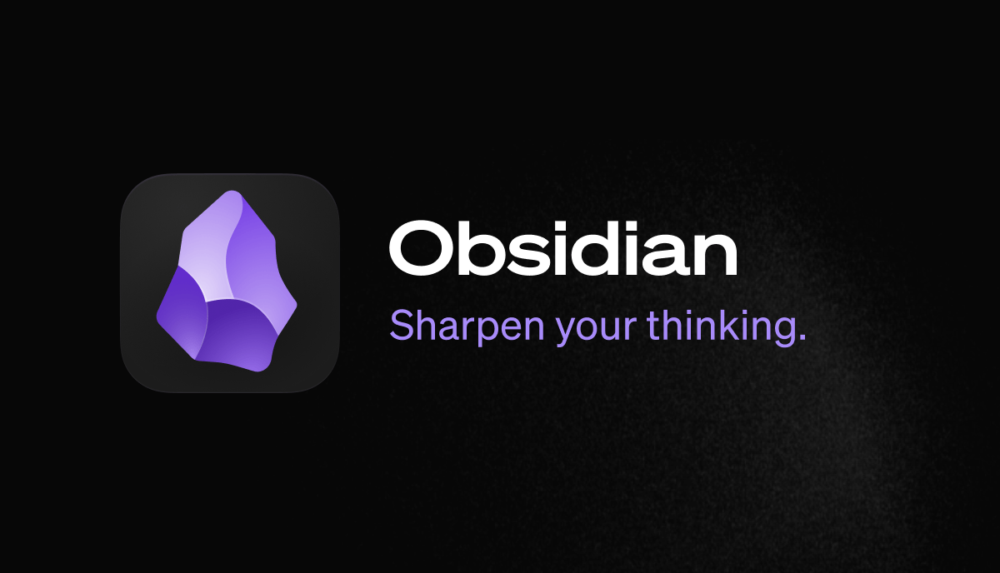

A URL on its own line becomes a card
Click to open. Files are named, never downloaded.
⌥ Option-click to edit. The note keeps the plain URL.
Reading list
Saved this week:
https://obsidian.md
Obsidian - Sharpen your thinking
The free and flexible app for your private thoughts.

https://en.wikipedia.org/wiki/Obsidian_(software)
Obsidian (software)
Obsidian is a proprietary personal knowledge base and note-taking application that operates on Markdown files.
https://raft.github.io/raft.pdf
raft.pdf
PDF document
⌥ Option